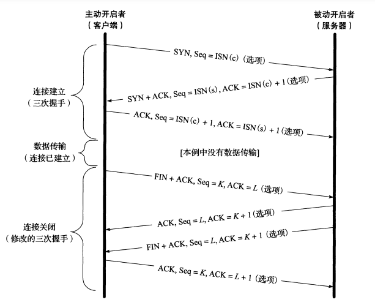
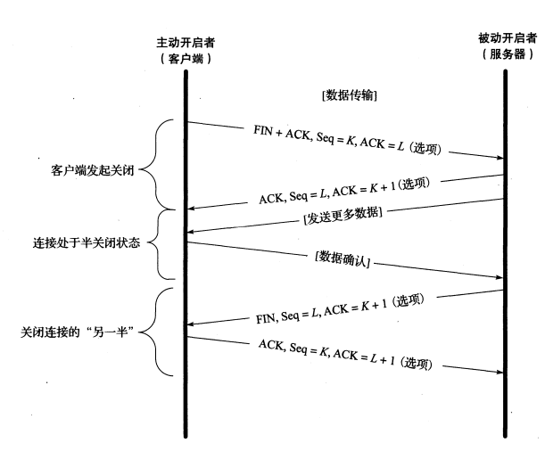
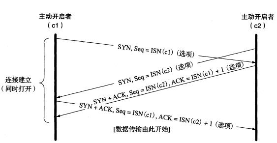
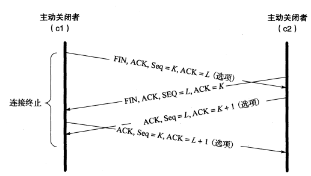
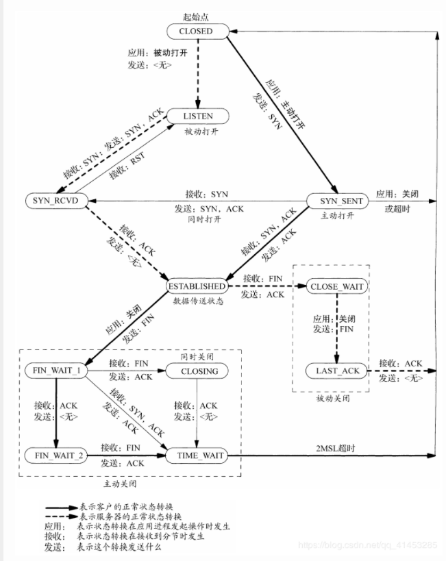
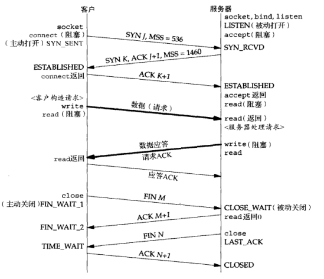
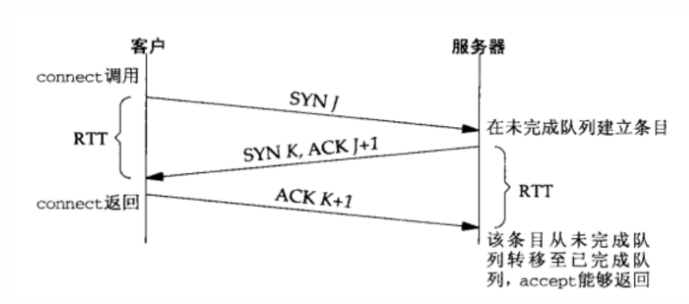

[TCP/IP详解]:TCP连接管理
1. TCP连接的建立与终止
简介
一个TCP连接由一个四元组**<源IP, 源端口, 目的IP, 目的端口>**组成，通信的每一端都由一个套接字，即<IP, 端口>对所唯一标识
一个TCP连接分为三个过程: 启动， 数据传输，退出
启动阶段负责建立连接，退出阶段负责断开连接
TCP表头

TCP连接图

三次握手
TCP启动过程需要三次报文段的传递，因此也被形象的称为三次握手
下面所说的SYN, ACK,FIN报文指的是TCP报文头部的SYN, ACK,FIN字段被置为1
第一次
客户端发送一个SYN报文段，指明自己想要连接的端口号以及自己的Seq字段，此时的Seq字段值为ISN(c)
第二次
服务器发送[SYN, ACK]报文段作为响应，ACK字段被置为
ISN(c) + 1表明自己接下来想要接受的Seq号同时指明自己的Seq字段, 称为ISN(s)
第三次
客户端对服务器的SYN报文段做出响应, 返回ACK报文段， ACK字段被置为
ISN(s) + 1
服务器端收到最后的ACK报文段之后，TCP连接建立成功
数据传输
客户于服务器使用write(), read()等操作进行数据传输
四次挥手
TCP退出过程需要四次报文段的传递，因此也被称为四次挥手
第一次
主动关闭者(通常是客户端)发送一个[FIN, ACK]报文段指明序列号K, 同时其ACK字段L用来确认最近一次接收到的数据
第二次
被动关闭者(通常是客户端)发送一个ACK报文段表明自己接收到了[FIN, ACK]报文段, Seq字段为L, ACK字段为K + 1
第三次
被动关闭者的身份转变，变为主动关闭者，发送[FIN, ACK]报文段给原来的主动关闭者, Seq与ACK字段都与上一次一样
第四次
原主动关闭者发送ACK报文段表示自己收到了[FIN, ACK]报文段
最后的ACK报文段被接受之后，TCP连接结束
FIN报文常常与套接字的close()操作相关联， 当某一段执行close()操作时，就会发送FIN报文段给另一方
同时还会在发送数据自己流的末尾加上EOF文件结束符
TCP半关闭
TCP的半关闭操作指的是仅关闭数据流的一个传输方向，如仅关闭发送方向的数据，但仍然可以接受数据
这种操作很少见但也是TCP协议的一部分，通过调用
shutdown()函数来代替close()函数就能够做到TCP半关闭操作TCP半关闭图

可以看到，TCP连接的完全关闭可以由客户端与服务器双方的两个半关闭操作来完成， 此时发送FIN报文段并得到接受之后数据仍然是可以单向流通的
TCP半开连接
TCP半开连接与TCP半关闭听起来感觉是一回事，但是其实完全不同
概念
在TCP连接过程中, 如果一方在未告知另一端的情况下通信的一端关闭或终止连接，那么就认为该条TCP连接处于半开状态
当通信的一方主机崩溃时，就会发生该情况，此时另一方将不会检测出另一端已经崩溃
举例
在CS模式当中，半开连接分为两种情况
服务器崩溃
如果服务器崩溃，那么在服务器重启之后，它将会丢失关于之前的TCP连接的所有记忆，此时如果客户端发送一个数据报，服务器端将会返回一个RST报文段作为响应
客户端崩溃
如果客户端崩溃，而服务器端又正在等待来自客户端的数据，那么服务器端可能就会一直保持这个连接
此时需要保活机制来关闭该链接
同时打开与关闭
同时打开
在极少见的情况下，会发生两个主机之间同时在一对套接字上主动打开TCP连接，这种情况被称为同时打开
同时打开时的报文的发送与普通的报文发送略有不同，会多出一个报文

当双方都收到ACK报文段之后，数据就可以正常传输了
同时关闭
同时关闭的情况则比较简单，只是TCP报文段的顺序发生了交叉而已

ISN
TCP报文头中的序列号用于解决报文段乱序抵达导致的混乱问题
假设一个连接在关闭之后，网络中的报文段还没有完全消失，此后连接重新启动，网络中旧的报文段可能会被接收端所接收
- 需求
- 为了防止同一个连接先后的不同实例产生上面的问题，需要避免实例之间的序列号产生重叠
- 一些恶意用户可以伪造TCP报文段，他们只需要选取合适的序列号，IP地址以及端口号即可
- ISN, 即初始序列号(Initial Sequence Number, ISN), 通常是一个与时间有关的数字，用于保证同对套接字每一个连接都有不同的初始序列号
选择一个合适的ISN可以用来解决上面的问题，现代的系统通常采用半随机的方式来创建ISN
Linux 采用一个相对复杂的过程来选择 ISN。它采用基于时钟的方案，并且针对每一个连接为时钟设置随机的偏移量
随机偏移量是在连接标识（即连接四元组：
<ClientIP,ClientPort,ServerIP,ServerPort>）的基础上利用加密散列函数得到的散列函数的输入每 5 分钟就会改变 1 次
2. TCP的状态转换
TCP为一个连接建立了11种状态, 并且定义了状态转换之间的规则
TCP状态转换图

从LISTEN状态到SYS_SENT状态也是合法的，但是Berkely套接字却并没有实现，因此没有画出
客户服务器状态转换

下面详细介绍一下TIME_WAIT状态
TIME_WAIT
TIME_WAIT状态，也被称为2MSL状态，因为处于该状态的套接字需要处于这个状态至少2MSL的时间, 在这个时间段内，不能够使用原来的套接字对重新建立连接
有些实现更加严格，规定如果一个端口号被处于TIME_WAIT状态的通信所使用，那么该端口号将在2MSL的时间内无法使用
可以使用SO_REUSEADDR套接字选项来绕开这一限制
MSL
MSL(Maximun Segment Lifetime, MSL)， 最大段生存期，是任何IP数据报能够在因特网上的存活的最长时间
Linux上可以修改:
/proc/sys/net/ipv4/tcp_fin_timeout文件来修改这个时间，通常是60s
TIME_WAIT状态为什么是2MSL的理由
可靠地实现TCP全双工连接的终止
假设主动关闭方发送的最后一个ACK丢失了，那么服务器将重新发送FIN, 从主动关闭方发送ACK到其接收到新的FIN的最长时间就是2MSL
允许老的分重复分组在网络中消逝
TCP必须防止来自某个连接的老的重复分组在该连接终止而又重启之后再次到达服务器的情况, 假设发送方在进入TIME_WAIT状态前发送了一条报文段A，然后关闭，接收方接收后响应了一条新的报文段B给发送方，那么在服务器重启时， 2MSL的时间内A,B都会消失
3. 连接队列
Linux为任何处于监听状态下的套接字维护两个队列:
- 未完成连接队列（incomplete connection queue）：即处于 SYN_RCVD 状态，可由
/proc/sys/net/ipv4/tcp_max_syn_backlog进行控制（默认为 1000） - 已完成连接队列（completed connection queue）：已经完成三次握手，等待应用层的接受，即处于 ESTABLISHED 状态，可通过
/proc/sys/net/core/somaxconn和listen()控制（默认为 128）
队列条目的变化随着connect()函数的调用以及返回发生变化

可以看出，当来自 Client 的 SYN 到达时，TCP 在未完成队列中创建一个新项，然后响应三次握手的第二个报文
这一项一直保留在未完成连接队列中，直到三次握手成功或者该项超时为止
如果三次握手正常完成，该项就从未完成连接队列中移到已完成连接队列的队尾
当进程调用 accept() 时，已完成连接队列中的队头项将返回给进程，如果队列未空，进程继续投入睡眠
4. SYN泛洪
本博客所有文章除特别声明外，均采用 CC BY-SA 4.0 协议 ，转载请注明出处！